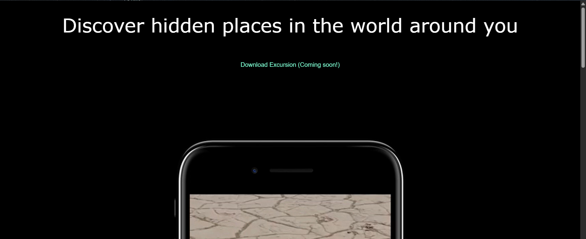
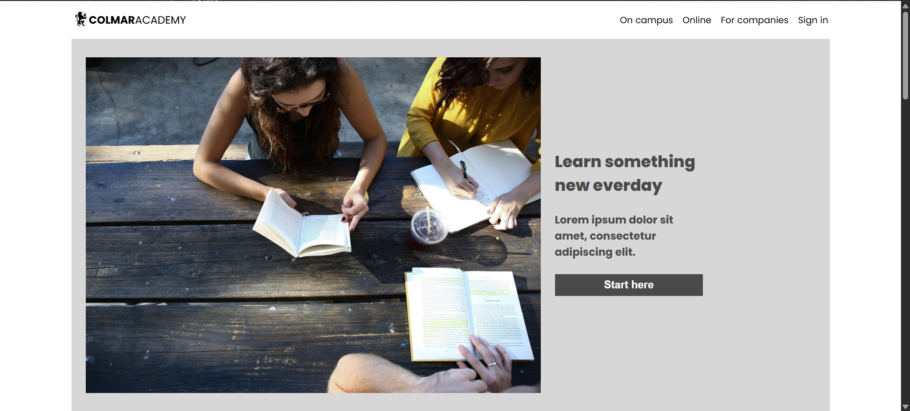

Projects

Excursion
The Excursion project is a web-based platform designed to showcase exciting travel destinations and excursions. The goal of the project is to create a visually appealing and responsive landing page that highlights the beauty of nature-based tours, with a focus on promoting mobile app downloads for booking trips and learning more about different locations.
Live Demo | Source Code
ColmarAcademy
The Colmar Academy project is a responsive, multi-section landing page for a fictional educational institution. The goal is to simulate a real-world client project by turning a provided wireframe into a fully functional website using only HTML and CSS. The site highlights the academy's philosophy, features, courses, and professional development opportunities.
Live Demo | Source Code